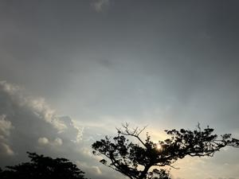
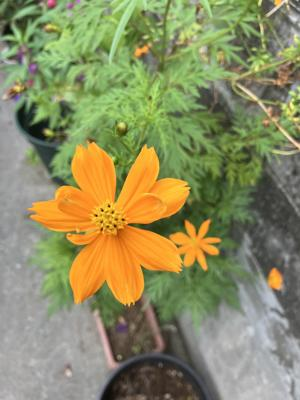

うるがいの話 ある日
最新: 親身な相談員【うるがいの話 ある日】とは 一日だけのプログです
『うるがいの話』の最新一日だけのプログで、通信料が少なく経済的だ。カニの画像をクリックすると全ての日付が載る『うるがいの話』サイトを表示します
|
|
【うるがいの話】 うるがい(ｳﾙｶﾞｲ urugai)とは、『もずくがに』の名前でとても大きくなります。 |
|---|---|
|
|
【カミマヤーの話】 猫のことを方言でマヤーといいます。カミマヤー（kamimayaa）とは、神の猫のことです。 |
|
【たながぁの音楽】 たながぁ（ﾀﾅｶﾞｰ tanagaa）とは手長えびのことで、何種類かあり大きいのは車 エビぐらいになります。 |

|
【ぶながぁの話】 ぶながぁ(ﾌﾞﾅｶﾞｰ bunagaa)とは、赤い髪の毛、赤い身体、そして身長は１ｍ２０ｃｍ ぐらい、川の蟹を食べているの目撃された。場所は沖縄県国頭郡大宜味村のと ある村僕の隣近所に住んでいる爺さんから、聞いた話です。 |
|
|
【ギーマの話】 ギーマ(giima)とは、山原の里山に咲くスズランに似た、 花を付けます。実は食べられます、 気が付くと口の周りが紫になっています。 |
2023年10月08日 (日）親身な相談員
15:03

デイケアの施設の相談員に、お義母さんがホームに戻れるかヨメは３０代の相
談員に相談しにいった。お義母さんの実態を知っているのでやんわりと断れる
かと思っていたが。お義母さんは薬を追加したにもかかわらず、施設ではだん
だん態度が悪くなっているらしい、この様子では家族が家での面倒をみるのは
大変でしょうから、まずは週５回のデイケアの日をあと一回増やして、ホーム
に戻る地ならしをし、そのあとホームに戻したらと答えてくれたと。おー、な
んと親身、ヨメは大喜び、再来週ごろからデイケアの日をまず、増やすことに
決めた。うーん、イラとさせられたケアマネジャーと違う。これも、個人の差
かな。お義母さんの状況は、徐々に悪くなっているもののまだ、ホームへの入
居は本人の心構えが十分とは思えず、ひたすら本人が心の底からホームへの入
居を哀願するまで待つしかない。根比べである。

なかなか花を咲かず、なにか別の食物を植えたのかと心配していたが、ひとき
わ大きな花を咲かせた。シメシメ、いい品種だ、種を蓄えておこう。と思った
が種が出来ない！、変種だった。
１５時５１分 ビットコインの総資産 ￥１２、０９７（↑１４）